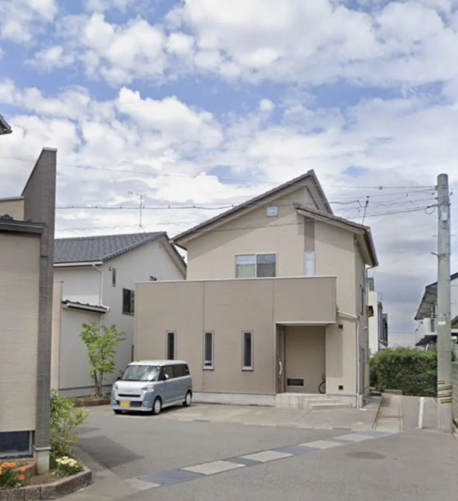

01
産後ケア デイサービス
日中、助産院でゆっくり体を休めながら赤ちゃんのお世話のサポートを受けられます。育児の不安も気軽に相談できます。
※利用にはお住まいの福祉保健センターへの申請が必要です

About Us
ありま助産院は、産後ケアを中心とした助産院です。出産後の体の回復、母乳育児、赤ちゃんのお世話──さまざまな不安や悩みに、経験豊富な助産師が丁寧に向き合います。「こんなこと聞いていいのかな」と思うことでも、どうぞお気軽に。
Services
産後のママと赤ちゃんを
しっかりサポートします
01
日中、助産院でゆっくり体を休めながら赤ちゃんのお世話のサポートを受けられます。育児の不安も気軽に相談できます。
※利用にはお住まいの福祉保健センターへの申請が必要です
02
助産師がご自宅に伺い、ママの体調確認・赤ちゃんの計測・育児サポートを行います。外出が難しい時期も安心してご利用いただけます。
※利用にはお住まいの福祉保健センターへの申請が必要です
03
「うまく飲んでくれない」「乳腺炎が心配」など、母乳育児のあらゆるお悩みに対応します。授乳が楽しくなるようサポートします。
04
「こんなこと聞いていいのかな」と思うことでも気軽にどうぞ。赤ちゃんのこと、ママ自身のこと、なんでもお話しください。
05
足元から全身のリラックスを促すフットセラピー。産後のがんばる体を、ゆっくり癒す時間をお届けします。
06
産後ママ向けのクラスや季節のイベントを開催しています。同じ時期のママたちと交流したり、育児に役立つ知識を楽しく学べます。
Access
ご来院の際はお気軽にお問い合わせください。
Contact
初めての方もお気軽にご連絡ください。
どんな小さな悩みでも、ひとりで抱え込まないでください。